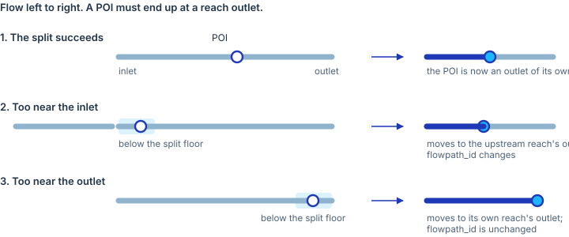

Hydrolocations are the points a model is reported at: streamgages, reservoir outlets, forecast points. Each must refer to the same place in the product as in the input, which is non-trivial because every phase between the reference and the product splits, merges and relabels the reaches they sit on.
The requirement is a chain, in the order the pipeline realises it.
The chain
1. Hydrolocations arrive. Each carries
hl_reference as its identity. That identity is unique per
row, and several rows may describe one place.
2. A POI is a snapped position on the flow network.
Hydrolocations that snap to the same place collapse into one POI with
one integer poi_id, minted once, while the lineage keeps
every hl_id and hl_reference. So
poi_id identifies a location, not a
hydrolocation.
3. A location interior to a reference reach becomes a split event. Being interior to the reference is expected, not a defect. It is what split events are for. The split makes that location a reach outlet.
4. From there the location is fixed. It stays where it is, and it stays an outlet at every derived grain: refactored, reconciled, aggregated, merged. Interior to a post-split derivative is a defect.
5. The reach whose outlet it is carries a catchment, unless it is a reference connector, a zero-area waterbody or artificial path that has no catchment to carry.
Why the outlet convention
Drainage area is reported at outlets. If a POI sits mid-reach, the area you get is the area of the whole reach, not the area above the POI, and a subset taken upstream of it either includes ground it should not or misses ground it should. Making the location an outlet is what makes the number correct.
It also explains an attribution that surprises people: a POI at the
inlet of a reach belongs to the reach upstream
of it, because that boundary is the upstream reach’s outlet. The
flowpath_id changes accordingly.

When a location cannot be split
Splitting has a floor. A cut that would leave a piece shorter than the floor produces a sliver that later steps will collapse anyway, so the split is declined and the POI moves instead, to the nearer end of its reach.
Nearer the inlet, and it becomes the outlet of the upstream reach,
which re-points flowpath_id. Nearer the outlet, and it
moves to its own reach’s outlet, which does not. A tie keeps it where it
is, since only the inlet case changes attribution.
This is the one place the fabric moves a feature the source placed, so every move is recorded:
| field | meaning |
|---|---|
hl_flowpath_id_source |
the reference reach the source assigned, when the input carries it |
hl_reach_change_reason |
why the location changed, or NA if it did not |
Any shipped location can therefore be reconciled against the source. A departure with no reason recorded is itself a defect.
Collapse is not loss
A missing poi_id in the product does not mean a POI was
dropped. Step 2 says collocated hydrolocations collapse into one POI, so
a collocated pair legitimately delivers one poi_id and
retires the other. The identity that must survive is: the merged row
pipe-joins every hl_reference.
So preservation is checked on hl_reference, never on the
retired poi_id. Two numbers are reported, because they mean
different things: references absent from the product entirely, which is
a real defect, and poi_ids retired by collocation whose
references survive, which is the contract working.
Where two hydrolocations merge, the gage keeps the identity.
Locations that cannot be placed
A hydrolocation landing exactly at the head of a headwater reach has nowhere to go. It is already at a boundary, so no split is generated; by the outlet convention it belongs to the reach upstream, and a headwater has none. The location is real and sits on a network node, but that node is an inlet.
Rather than ship a permanent contract violation, these are withdrawn
from the POI layer. Nothing is lost: the hydrolocation keeps its
identity, position and reach in the hydrolocations layer
and carries the reason it was not promoted, and the poi_id
is cleared from flowpaths and network so no
layer references a POI that is not there.
Drainage-area agreement
Gage hydrolocations carry a check comparing the fabric’s drainage area against the reference’s at the same location:
| field | meaning |
|---|---|
poi_da_ref_sqkm, poi_da_ngen_sqkm
|
the two areas compared |
poi_da_ratio |
relative difference, |ref - ngen| / max(ref, 1) |
The comparison is reported, not judged: there is no threshold, and no gage is moved to make the numbers agree.
Where the reference carries no usable drainage area, or one below a
single DEM cell, poi_da_ratio is NA: the gage
was not compared, which is different from comparing well.
Checks
Each step of the chain is checked by the invariant suite, with a 30 m
tolerance, the DEM resolution. See
vignette("invariants").